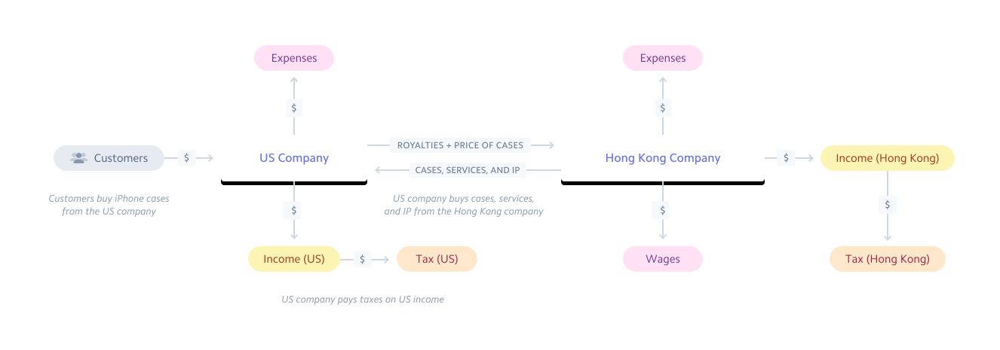

Starting a real business
Many of the mechanics of running a business are opaque, particularly to first-time entrepreneurs. You may not have done bookkeeping or contract negotiation before. You might be used to working in companies with processes and people in place to support your work. Don’t worry! Every skill involved in running a business is learnable, including by you, specifically.
Atlas exists to help entrepreneurs worldwide start, run, and grow internet businesses. We put together this guide to cover many of the details you’ll need for your business in its first year. We’re writing primarily from the perspective of U.S. companies—it’s most relevant to Atlas customers (all of whom have U.S. companies) and helps keep our scope manageable. Hopefully this helps to demystify some of these concepts and free you up to go back to creating value and finding customers for it.
Our friends at PwC and Orrick contributed their expertise to parts of this guide. That said, to the extent we cover accounting and legal topics, this is information rather than advice. Please use it as a pointer to know what topics to cover when you discuss the matter with your professional advisors. We are not lawyers or accountants, and we’re not your lawyers or accountants. (Companies incorporating through Atlas get a consultation with accountants and lawyers included as part of the offering.)
We intend to add to this guide over time. Drop us a line at atlas@stripe.com if there is any topic you’d like us to cover.
Incorporation
A business typically exists as soon as the person engaging in the activity says it does. The label business is simply a statement about intent: if you intend an activity to make money by providing goods or services to customers, congratulations, that activity is a business.
A company, on the other hand, is a particular operating structure registered in some jurisdiction. They come with substantial rights and responsibilities.
Many entrepreneurs wonder whether their businesses should become companies (via a process called “incorporation”) and, if so, when, and what form of company? We’ve written a quick guide to explain this.
What is the alternative to incorporation?
By default, a business has no existence apart from its owners. This is called a sole proprietorship (sometimes called a sole trader outside of the U.S.) if it has only one owner or a partnership if it has multiple owners.
Sole proprietorships are extremely common; the Internal Revenue Service (the U.S. taxation agency) is aware of approximately 27 million of these informally organized businesses (compared to approximately 6 million formally incorporated businesses.) This is broadly true across most countries which have a distinction between sole proprietors and corporations.
Why incorporate?
So why incorporate if 80%+ of entrepreneurs do not? To quote the Orrick Legal Guide for Stripe Atlas:
The primary reasons for selecting a corporate form is for the limited liability and perpetual existence that these organizations can provide because once a company is formed, it is regarded as a separate legal entity from its owners. Sole proprietors and partnerships are usually personally liable for the debts and obligations of their businesses and the businesses cease upon the death or departure of the principals.
Incorporation is primarily about risk reduction for all parties in an enterprise.
- Incorporation clarifies the ownership interests of entrepreneurs, investors, and employees, allowing everyone to be confident that they are receiving the deal which they believed they bargained their money/labor for
- Incorporation moves liability for debts and obligations of the business from the entrepreneurs into the company itself – since the law recognizes it as a separate entity from its owners
- Incorporation turns a business from a concept into a thing; that thing can be owned, bought, sold, borrowed against, destroyed, etc., like any other property
- Incorporation sends a signal to customers, partners, and the rest of the world that the business intends to operate in a professional manner
The chief reason many entrepreneurs choose to not incorporate is that running a real business is complicated and expensive. A sole proprietorship exists as soon as you say it does. It can stop existing almost as quickly. A company, on the other hand, is like a puppy: owning it obligates you to expensive upkeep, even when you are tired of it chewing on the furniture.
When to incorporate?
Whether to incorporate one’s business or not is a decision to make carefully after talking to one’s professional advisors, such as a lawyer or accountant. Some factors which typically counsel incorporation are:
Incorporate immediately if you’re told to by professional advisors
Some businesses are, by their nature, so exposed to liability that they should almost always be operated as an incorporated entity. Your lawyer and/or accountant can, given a brief description of your business, likely give you their considered opinion on whether your industry or business model strongly warrants incorporation.
Your lawyer or accountant might also advise incorporation as a proactive measure if you have substantial assets outside of the business, such as e.g. other business interests or a house, which should be protected from debts/liabilities attached to the business.
Incorporate if you want to share ownership with anyone else
Unincorporated partnerships can exist. That said, they have some drawbacks compared with incorporated partnership structures, like limited liability companies (LLCs). Most entrepreneurs with partners choose to have an LLC or corporation.
Partnerships are extraordinarily customizable with regards to who is contributing what and who ends up owning what as a result of the partnership. This customizability can be extremely complicated, and making sure the agreement is fair to all parties (and appropriately de-risked) can run up a large tab for professional services. It is possible you can economize on costs and complexity by adopting a variant of an LLC or corporation.
An unfortunate fact of starting businesses is every relationship will eventually come to an end. LLCs and corporations have well-established mechanisms for removing a partner or winding down entirely. Ad-hoc partnerships often don’t, adding additional headaches, expense, and legal risk to an outcome which is likely already an unhappy one for all involved. You can avoid heartache during the dissolution of your ad-hoc partnership by formalizing the partnership early.
The legal name for an ownership interest in a company is equity. There exist a variety of ways to grant it. These implicate an existing legal infrastructure which dates back hundreds of years. Holders of equity have predictable rights which they can reasonably assume will be enforced; this is part of what makes equity in a successful business so valuable.
Most founders who want to share ownership of a business with employees or advisors (even if they’re not full partners), choose to grant equity—via a well-defined instrument—in an entity rather than having poorly specified, informal agreements that come back to bite you later.
Incorporate when you anticipate taking investment
Sophisticated investors want to know that, in return for their investment, they will share in the economic proceeds of the business as agreed. This is much easier to guarantee for corporate entities than for unincorporated businesses; we have centuries of practice in accounting for how much money companies make, apportioning varying amounts of control over their operations, and handling disputes in interpretation regarding agreements made about them.
Most serious investors prefer to invest in a corporate entity rather than an unincorporated entity. The exact timing of incorporation depends on the particular deal and investor; sometimes the deal is struck in principle before incorporation and formalized with the newly-incorporated company, usually the company being formed is a prerequisite to having the deal.
Incorporate before hiring a full-time employee
There are many, many ways that businesses are regulated. One of the most detailed and complicated ways is in their interactions with employees, due to the social importance of the employment relationship. Accordingly, bringing on your first employee causes a quantum leap in the level of sophistication that you have to bring to running your business and to the potential downside risk of being non-compliant.
Additionally, your business may be responsible in some circumstances for that employee’s actions. If you have not incorporated, the business does not have a separate identity than you personally, so you personally might be forced to pay for their mistakes.
Incorporate as your business approaches material size or complexity
As businesses grow, they tend to get more complicated and to accrete more sources of risk. You’re shipping more products to more customers. Your services start getting sold to more sophisticated customers, who have more to lose if you break things and more propensity to sue when things get broken. You attract the attention of bad actors.
Incorporation can help limit your personal exposure to risks which that might properly belong to the business you’re running.
What “material size” means to you is a great question to run by your accountant, but as a guideline, in the United States, many businesses with revenue above $100,000 choose to incorporate.
What types of companies are there?
Companies, in the United States, are regulated at the state level, not at the federal (national government) level. The laws of the 50 states generally provide for limited liability companies (LLCs), corporations (generally referred to as “C corps”), and a few more exotic options which are not relevant to most people running internet companies.
Should I have a C corporation?
Most companies that seek to raise investment from investors in the United States choose to have a C corporation, specifically, a Delaware C corporation. It is the overwhelming choice of technology companies and their investors—over 90% of IPOs in the US from 2007 through 2014 were of Delaware C corporations (see here, page 8). If you have another type of entity, your investors may ask you to dissolve it or convert it into a Delaware C corporation as a condition of, or pre-requisite to, investing, which can be needlessly costly.
Why do venture capital investors overwhelmingly prefer to invest in Delaware C corporations? Quoting the Orrick Legal Guide for Stripe Atlas:
Forming your company in Delaware is easiest and most efficient. Delaware is the state of incorporation for more than 60% of Fortune 500 companies. Delaware has an established body of laws governing corporations: it’s the only state to have a separate business court system (the Court of Chancery). This is meaningful to entrepreneurs for two reasons. First, there is a long-established body of laws relevant to corporations that has been tested in the Delaware courts over many years. In the event of any legal action, therefore, there is a high degree of predictability. Second, Delaware has a long record of pro-management decisions. Venture capitalists (VCs) feel more at ease when they see that a company is incorporated in Delaware because it is familiar to them.
Should I have an LLC?
LLCs have a few advantages over C corporations:
- They cost less to incorporate
- They’re generally easier to incorporate and administer in an ongoing fashion
- They offer pass-through taxation, which may be more tax efficient in some circumstances, particularly for smaller firms
Many solo entrepreneurs, consultants, or folks doing freelance work choose LLCs for these reasons. It is far less common to see high-growth technology companies choose to organize as LLCs—those companies usually choose to take investment at some point, at which point they typically will be forced by investors to become C corporations.
Stripe Atlas does not, at present, offer incorporation of LLCs. Stripe will be adding support for LLCs in the future. If you’d like to incorporate as an LLC, email atlas@stripe.com to be notified when we add this ability.
Is one type of corporation more a “real business” than the other?
This is an excellent question for many of our international entrepreneurs, since in some countries some classes of corporation are treated as second-class corporate citizens. This is not widely true in the United States. Companies are happy to deal with both C corporations and LLCs. Individual consumers largely do not particularly understand the difference. Both are well-understood, supported options for interacting with the government.
I’ve heard of S corporations?
An S corporation is not a separate type of company. It is a particular way to elect (ask the IRS for) the pass-through tax treatment of LLCs with the corporate form of a C corporation. The IRS covers the topic in more detail here. We’ll cover S corporations in more detail at a later date.
Who can incorporate companies?
Substantially anyone can incorporate a U.S. company and own all of its equity interests. You do not have to be a U.S. resident or U.S. citizen. A foreign company can incorporate and wholly-own a U.S. company. Misconceptions about this are common, but the Orrick Legal Guide for Stripe Atlas is clear:
There are no U.S. federal or state laws that require a stockholder or LLC member to be a U.S. citizen or permanent resident to form a U.S. company. Non-U.S. nationals can own all of the shares of a U.S. corporation or be the sole members of a U.S. LLC. Nor must a member of the corporation’s Board of Directors or corporate officers own any shares (like “directors’ qualifying shares”). Similarly, all of the members of the U.S. corporation’s Board of Directors and all of its officers can, if so desired, be non-U.S. nationals and U.S. non-residents.
There exist millions of U.S. corporations which are directly controlled by people outside the United States, including many people/corporations who are not U.S. citizens. This is considered a normal business practice—the United States does an incredible amount of business internationally, which requires foreigners to be able to transact business in the United States, and when they do so it is often most convenient for them to transact as U.S. entities. People routinely incorporate U.S. companies for projects as simple as owning a flat or a condominium.
Corporations owned by foreign residents or non-citizens are still corporations.
Bookkeeping and accounting
If you’re getting paid, congratulations! You’ve created something that people wanted enough to trade money for. To make sure your business stays healthy, and help you focus more on the business than on keeping the lights on, you will want to keep records of money moving in and out of your business. Welcome to the fascinating world of bookkeeping and accounting.
What is bookkeeping? What is accounting?
Historically, there was a distinction between the functions of bookkeeping and accounting, but the distinction is weakening as more of both functions are done by computers rather than people.
Bookkeeping is recording details about transactions to the books (ledgers) of the company. It has historically been seen to be work done by detail-oriented specialists, but not something which required a higher degree.
Accounting turns the data from books into conclusions about the health of the business. Some of this function has largely been subsumed by computer programs—given that the books of the business are computerized, calculating e.g. a balance sheet (a report listing the present assets and liabilities of the business) is trivial.
In most businesses, accountants advise about the structure of the business (for example, how funds flow between a parent corporation and a subsidiary), design procedures and controls for novel transactions which are more complicated than the routine work handle by bookkeepers/computers, and advise the business’ owners/managers on financial topics. They also often help with tax planning and preparing tax returns.
What are “books?”
Your business keeps many types of records. One category of these, which describes the movement of value into and out of the business, is called “books.” The books track value, not necessarily always money, but for convenience’s sake we’ll talk about money rather than the long list of valuable things a business can keep records about.
The physical manifestation of the “books” is different at every business—at some businesses it is a literal book with a physical ledger of transactions, at others it is an Excel file, at others it is distributed among multiple different accounting systems.
Each entry in a ledger has an amount, a description, a date, and some notion of where the money is coming from and where it is going to. You can think of your checkbook or bank statement as a ledger, though a very simple one relative to one your business is likely to have.
Most businesses use double-entry bookkeeping, where the business keeps multiple logical ledgers, each representing an account of the business. “Accounts” here could correspond to actual bank accounts or to something which is useful to think about but which doesn’t have a physical place of its own, like “revenue.” Double-entry bookkeeping has every transaction recorded twice: as a credit to one account and a debit to another.
Double-entry bookkeeping was a revolutionary technology back in the 1400s, because it makes errors and malfeasance less likely than using a single ledger for the business. These days computers do most of the actual work, so the business owner can probably avoid thinking about the logistics of bookkeeping that frequently and instead focus on making good decisions about the outputs from the bookkeeping/accounting processes.
Separating one’s financial lives
One of the first steps to take for establishing proper accounting controls on your business is to separate your personal life from your business life. This is often difficult early, as many entrepreneurs start by operating the business as an extension of their personal identity. That is natural and expected, but as early as feasible, you should make a clear division between money inside the business and money outside the business.
This has a few benefits:
One of the easiest ways for creditors of a company, or others with claims against it, to “pierce the corporate veil” is to demonstrate that the company was not a bonafide business but rather treated like just a separate pocket for the entrepreneur. “Piercing the corporate veil” is legal jargon for voiding the presumption of that the liabilities of the corporation rest solely with the corporation and not its owners. As the owner of a company, you urgently want to avoid this happening.
Paying personal expenses out of the corporate accounts or corporate expenses out of your personal accounts tends to demonstrate that the company is just a fiction. Since entrepreneurs who incorporate want (and should benefit from) the limitation on liability offered by incorporation, they should be careful to maintain the distinction.
Additionally, it is just operationally easier if your business transactions and personal transactions stay in separate accounts. You have no particular obligation to keep accurate books for yourself, but you do for your business. If every transaction on a credit card is known to be business-related, that makes your bookkeeping easier; if you know with certainty that none are business-related, then you can throw away that statement without consequence for the business.
Enforcing discipline on movement of money between the corporation and yourself can help surface issues before they’re unsolvable. Businesses are complicated; even small businesses can easily have hundreds of transactions in a month. It is very easy to have the inaccurate perception that one’s business is doing well while it is actually bleeding money. This can happen if you have money coming in and out of your personal accounts all the time, and you might not realize it unless you pay very close attention to how often you are personally incurring business expenses. This happens to even very talented entrepreneurs, and it can be a painful realization to wake up to.
Internet businesses are, happily, very well-positioned to separate from your personal finances, because of how much of the business takes place electronically. If you remember a few simple rules, your business will default to doing the right thing. Let’s walk through how you should handle some of the most common transactions.
Ways to simplify bookkeeping
Revenue: Open a business checking account as the primary holding place for money for the business. Make sure that all revenue for the business is deposited into that checking account. For example, have Stripe (or your other credit card processor) send funds to that account. If you receive checks, deposit them into the account (rather than cashing them).
Doing this will allow you (or your bookkeepers) to quickly scan deposits into the business, which will almost all be revenue items, and match them against your sales.
Non-revenue deposits: Money occasionally moves into businesses for reasons other than “a customer paid it to you.” Prominent examples include investment, entrepreneurs loaning money to the business, etc. You should keep these transactions as infrequent as possible and document them appropriately.
Early in the life of the business, when it is not yet cash-flow positive, an entrepreneur will often need to inject money into it. This is fine, assuming you can afford it, but: arrange for this to be as infrequent as possible. Monthly is a good cadence for this; multiple times a week is not.
Expenses: Open one or a small number of credit cards. These can be in your personal name or in the name of the business—business credit cards are often difficult to qualify for early in the life of your business. Put all business expenses on a credit card where possible; never put a personal expense on the business credit cards.
Don’t make transactions which are mixed in character; they’re painful for bookkeeping later. If you need to make a purchase from Amazon with business-related items and unrelated items, make two purchases instead. It may cost you a bit of extra shipping (or extra SaaS accounts, or extra time asking a clerk to ring up two purchases at a store), but you’ll save on bookkeeping fees and aggravation. There are many places in your business where your personal attention unlocks added value; answering the question “Was this pack of batteries you ordered business or personal?” is not one of them, so don’t organize the business such that you’re routinely asked that question.
Pay those credit cards from the business checking account, and only from the business checking account.
You should minimize the number of business expenses which occur via any method other than your business credit card, most especially cash transactions. If you need to reimburse yourself or an employee, make sure you keep records of both the expense and the reimbursement.
Some government agencies, landlords, etc may only be able to be paid by check; use your online banking to write them checks directly from the business checking account, or use direct debits or ACH payments to pay them.
Loans from the business to the entrepreneur: Prefer to avoid making these. Investors hate them because historically they can indicate misuse of company funds. They complicate bookkeeping unnecessarily. They make the story that you and your business are separate a harder one to sell. Ideally, you want flow of cash between the business and yourself to be unidirectional and relatively infrequent: a monthly salary check, a quarterly distribution, etc. These are easy to account for and have clear treatment in terms of tax consequences.
Loans get… messy. For example, it is very easy for lax bookkeeping to result in loan repayments to the business being either recorded as entirely revenue (which is incorrect, and increases the business’ tax burden unnecessarily) or deemed as revenue by the tax agency (which is incorrect, but might be difficult to defend against given lax bookkeeping).
If you need credit, get it from a bank. Paying an 18% APR on a balance averaging $5,000 over the course of a year is a lot less expensive than paying for your accountant to answer the IRS’ questions about an informal loan that is lacking in documentation or extensive transactions between the owner and the business.
The IRS also has toothy rules about “related-party loans”, which require more documentation than loans received from banks. If you fail to maintain this documentation, you can be penalized, not because you intended to abuse the loan but simply because you failed to follow the rules about documentation.
Speak to your accountant to appropriately document these loans if you choose to make them. Or save yourself the trouble, and just don’t borrow money from or lend to your business without careful consideration.
Cash accounting vs. accrual accounting
There are two methods of accounting widely used by internet companies: cash accounting and accrual accounting. They result in materially different processes involving bookkeeping/accounting and can result in substantial differences in taxes. You’ll likely pick one of the two methods and stick with it for years at a time. (The two methods imply different ways of keeping the books for your company; you’ll also have to tell the IRS which method you were using when you file your first tax returns for the company. Changing methods requires both filing forms with tax agencies and often a lot of internal work to make sure the transition is accounted for correctly, so you’ll want to avoid it where you can.)
In the cash method, your business records revenue as soon as it is “available to you without restriction.” This is a term-of-art from the IRS; a simplified view of it is “If your customer thinks they’ve paid you, you’ve probably booked revenue in the amount they think they paid you.” Revenue which has hit one of your accounts is certainly revenue as of that instant; checks which have been sent to you are revenue as of when they are sent rather than when they are received.
Expenses are similarly simple: you book them when they’re actually paid.
Many entrepreneurs start their businesses using the cash method, as it is very easy to understand, even for entrepreneurs without a business background.
The accrual method is more complicated than the cash method. The tradeoff it makes is to allow the business (and other interested parties) to have a more accurate understanding of the true health of the business at any point in time.
In the accrual method, both revenue and expenses are recognized once the amount is fixed, known to be (in principle) collectible, and after economic performance has happened.
This means that, for example, if you accept funds for an order but have not shipped yet, you do not recognize revenue until you ship. (You book an asset for the funds and a liability of unearned revenue representing the obligation of the corporation to ship the equivalent value of goods; you then decrement the liability when you ship and increment revenue.) Bookkeeping: easy, once you get the hang of it… but your time is better spent doing almost anything else, so pay someone to do this for you.
Many investors will expect to see books done in the accrual method, as there are a variety of ways to report via the cash method which make a business seem to be more successful than it actually is. Switching one’s accounting method can be done at the end of a tax period, but is more than a bit of a headache, so if you know you’re on the investment track you might want to start with the accrual method to save yourself having to revisit all your books a few months down the road.
Substantiation requirements
Your business is required to be able to substantiate (provide documentation about the facts regarding) any transaction on your books. You will want to maintain organized records, in addition to your books, which will let you quickly answer questions asked about any transaction.
This is most important for larger transactions or for transactions in a few high-risk parts of one’s tax return, but in principle, you need to be able to substantiate everything.
The IRS does not mandate that you have any particular style of recordkeeping, only that you do it in a consistent manner which lets you comply with your obligations. Internet companies customarily keep most of their records in one or more computer systems. It is important that you know what information is where, that you’re able to pull it at will, and that your records are available for the appropriate length of time. (In general, this is 3 years after the filing of the tax return for that year, but there are some exceptions. As a practical matter, internet businesses should store substantiating data indefinitely. Hard disk space is practically free; it’s certainly cheaper than setting up a process to routinely make the keep-or-delete decision about particular documents.)
Substantiating revenue items is fairly easy: keep copies of receipts and invoices. (These are described, in detail, in another chapter.) If you have particularly large transactions, you probably will want to be able to point to contracts or other documentation attesting to the details of what work was actually performed.
Your receipts/invoices will generally be centralized by nature in your system. If you happen to migrate systems, remember to save old receipts/invoices somewhere that won’t get wiped after the migration is over. Organizing them by year minimally; it is often useful to be able to order them within the year, as a common form of inquiry is “Your books show a revenue item for $12,000 on December 3rd, 2012. Substantiate it in an appropriate level of detail.”
Substantiating expense items is modestly trickier, as expenses are typically far more varied than revenue. Additionally, certain flavors of expenses have anomalously detailed recordkeeping requirements.
You will want to have a policy that any purchase of goods or services at your company requires a written receipt and/or invoice, and that all receipts/invoices are kept in a central place. Many companies use receipt-tracking or expense-tracking software. A lower-tech, but still compliant, way to do this is to establish a receipts@ email address for your company and require all employees, as a matter of policy, to have receipts either delivered there or to forward receipts there if they are issued one personally.
If a transaction doesn’t result in a receipt, you should treat that as an anomaly. Part of the discipline of having receipts is to force money moving out of the company to come with documentation justifying it; transactions which do not have receipts are suspicious by nature, and may represent activity that your business wants to clamp down on, like embezzlement. Most of the time the reason is innocuous, but you should still immediately create a written record of the transaction and store it wherever you store receipts/invoices. (Note that backfilling written records from e.g. credit card statements is not acceptable; the IRS wants records to be maintained contemporaneously with the transaction or shortly thereafter, when the details are still fresh and when there is minimal possibility for fudging them for one’s tax advantage.)
Written records don’t have to be particularly elaborate for most transactions, particularly small-dollar ones; receipts aren’t generally that elaborate, either. You’ll want to cover who you paid (in an appropriate level of detail—”A man” is not appropriate, “the flower shop on 3rd street” probably is, at least for a small transaction), exactly how much was paid, the manner of payment (from an account, in cash, etc), what was purchased, and one’s rationale for not having a formal receipt/invoice.
Electronic records count as written records, particularly when you maintain them in an orderly fashion in the ordinary course of business. If it is your business’ ordinary practice to keep receipts in the receipts@ email inbox, for example, then a two-line email to receipts@ is a written record created in the ordinary course of business at your company, and it will generally be treated with routine deference.
You should keep statements (and similar documents) for all bank accounts, credit cards, etc indefinitely. Note that banks will sometimes retain statements on their own systems for less time than you’d like them to be retained—make a practice of saving the electronic copies in a place you control. Banks do go out of business occasionally; you don’t want to have to reconstruct an account statement from 5 years ago simply because you closed the account or the bank was bought in the interim.
Travel, transportation, entertainment, and gift expenses are sometimes abused by some taxpayers and, as a result, have specific recordkeeping requirements. You should be especially careful to keep written contemporaneous records for these transactions; the IRS describes what you need in Publication 463. A preview of coming attractions: you should keep a spreadsheet for each employee which shows any dates of travel, where they stayed (get receipts!), and what the business purpose for the travel was. You should, any time you do business entertaining (including meals), record the participants and the specific business purpose contemporaneously with information about the transaction; many small businesses simply write this on the back of the receipt.
As with most tax topics, the authorities try to be reasonable about the degree of ceremony required for small transactions, and it goes up as transactions get larger, more frequent, or more material in the total context of your business. It is unlikely that you need to write much more than “Dan Smith; candidate; discussed employment opportunity” if you buy someone $20 worth of lunch; if your end-of-year party costs your company $150,000, run that by your accountant and ask them what the appropriate level of substantiation is.
Business taxes
No business owner particularly likes the amount of work required to calculate taxes (to say nothing of the actual amounts paid), but calculating and paying taxes is both a legal obligation and also a responsibility entrepreneurs undertake in return for the substantial support that society affords us.
Beginning entrepreneurs are sometimes excessively scared about the tax liabilities involved in starting a business. We want to demystify them, so that you have a good understanding of what you’ll be asked to pay, roughly how much it will end up being, and how to organize your business such that calculating and paying taxes will be as painless as possible.
There are many varieties of taxes in the United States and worldwide. This guide covers a subsection of taxes which your U.S. corporate entity will likely have to pay. Entrepreneurs or owners of companies may realize income as a result of working for the company, receiving dividends, capital gains; make sure you also handle your personal obligations.
As we saw in the chapter on accounting, the entire profession of accounting exists in large part to help you correctly figure what taxes you owe. This brief guide is not a substitute for the professional advice from your accountant. Get an accountant—their advice will almost certainly save you money and stress.
What is tax planning?
Somewhat surprisingly to entrepreneurs, there are often multiple ways to apply tax law to the economic facts of your business. This can result in different amount of taxes, depending on how one applies the law. Accountants help businesses develop a tax position which is both compliant with the law and which is efficient in amount of taxes required.
Tax planning often starts well in advance of the tax being due or even the transactions being entered into. For example, given that one wants to award employees equity in the business (to attract desirable employees and reward them appropriately for the hoped-for success of the venture), one makes consequential decisions about business structure at incorporation, perhaps even before employing one’s first employee. The eventual realization of the value of that equity, and the tax consequences for those future employees, might happen in 5 to 10 years down the road!
Tax planning is legal and expected of businesses. As judge Learned Hand wrote in 1934, summarizing centuries of precedent:
Anyone may arrange his affairs so that his taxes shall be as low as possible; he is not bound to choose that pattern which best pays the treasury. There is not even a patriotic duty to increase one’s taxes. Over and over again the Courts have said that there is nothing sinister in so arranging affairs as to keep taxes as low as possible. Everyone does it, rich and poor alike and all do right, for nobody owes any public duty to pay more than the law demands.
Tax agencies often, however, take a dim view of abusive tax structuring, where the sole rationale for some action of the business is to avoid taxes, and can impose substantial penalties when it occurs. Tax can be a very complicated subject, which is one more reason to have your accountant and/or lawyer review consequential changes to your tax strategy. They can provide you advice on whether you’re doing something which is mainstream in your country/industry or something which has a higher risk of causing your returns to be judged insufficient by tax agencies you are subject to.
Delaware franchise tax
Delaware, like many states, charges all companies incorporated in Delaware a “franchise tax.” You can think of the franchise tax as an annual fee to renew the registration of a corporation—in some states, the fee is indeed called a fee.
Almost all taxes are assessed on revenue or profit. The franchise tax is different. There are two ways to calculate it; both in principle start at a relatively low number and scale with the complexity of the company.
You, or your accountant, can calculate your franchise tax in under two minutes. The rules and formulas are on the State of Delaware’s website.
Companies incorporating with Atlas will generally owe the minimum tax under the Assumed Par Value method, which is presently $350 per year.
Franchise tax is due with your Annual Report filing, which you have to do by March 1st of every year. U.S. corporate tax returns are generally due on March 15th (assuming your fiscal year is the calendar year); it’s generally easiest to file your franchise tax when doing your tax return preparation for the corporate tax return, which (since you’re well-organized) will be done and ready to go sometime in February.
Entrepreneurs can file their own Annual Report and franchise tax relatively easily through Delaware’s website, in most cases without requiring professional advice. Your accountant can also do it for you; expect to pay a nominal amount (perhaps $100 or so) for this.
Sales tax
Here. Be. Dragons.
In the United States, businesses can be required to collect sales tax by their local jurisdiction (city, county, etc) and by their state. This happens in every jurisdiction where the company both a) has a transaction take place and b) has a “nexus” of economic activity.
In general, internet companies only have a nexus in locations where they have physical property or employees doing work on their behalf. You may not have a nexus simply by means of incorporating in a state, by having customers in a state, or by having your website be accessible in a state. (This is, regrettably, difficult to say with certainty, as some states have been getting more aggressive at claiming that internet activity constitutes a nexus.)
Accordingly, many internet companies, particularly smaller ones, only charge sales tax on a relatively small percentage of their transactions.
You will generally be required to collect the tax from customers, display on each transaction how much tax you are collecting, and remit the tax to the appropriate government agency on a monthly or quarterly basis.
Many localities in the U.S. also have a “use tax”, which corresponds to the sales tax. A use tax is paid by the customer in a transaction, not by the seller—customers are supposed to tell the local taxation agency “I am using some property which I purchased outside of this jurisdiction; here’s the tax payment.” Some people believe that compliance with use taxes is very, very, very low. Nonetheless, you may have a filing requirement if your business has a physical presence in a U.S. state—check with your local state and/or city/county.
There has been talk for the last several years of instituting a so-called “internet sales tax” to make the treatment of internet businesses more predictable, since the current tax regime is very complicated and many larger retailers (who, as a result of their operations, have nexuses in many jurisdictions in the U.S.) feel like they pay disproportionately high sales taxes while smaller companies (who have very few transactions covered by their nexus, or potentially no nexus at all) pay little to none. This law has not been passed yet. You will likely not have to worry about it until you have $1 million in revenue either way.
The complexity of a sales tax filing depends greatly on the specifics of your business, including what you sell, how you record the locations of transactions/buyers, how easy it to determine where your business’ nexus or nexuses are, and the like. As a rule of thumb, most internet businesses will get their sales tax returns filed by the same accountant who handles their corporate income tax return. It will generally cost a few hundred dollars in professional services fees, but this depends on the complexity of the business.
Corporate income tax
Profits of C corporations are taxed at the federal level and at the state level. The main form for the federal return is Form 1120.
Some tax returns or government filings are simple enough to do yourself. This is not one of them. While it looks simple (only five pages at first!), you should absolutely, positively have a professional tax preparer or accountant involved in the preparation of any corporate tax return. It is relatively easy to make consequential mistakes, and sorting them out will be a distraction from running your business. Additionally, there are a variety of ways to characterize things which are not mistakes per se but which will result in you paying excessive amounts of tax relative to equally valid ways to characterize the same economic facts.
Income tax is only levied on income, rather than revenue. Income is, generally speaking, revenue minus expenses. Most things which you purchase on behalf of the corporation, including the salaries of the founding team and employees, can be deducted immediately as expenses.
A relatively smaller number of things cannot be expensed but have to be capitalized; their (generally high) upfront cost gets apportioned to the business over the useful life of the thing. This is also referred to as “depreciation” or “amortization.” Internet businesses do not typically have high capital expenses early in their lives, particularly as the historic sources of capital expenditures (servers, networking equipment, custom software development, etc) are increasingly rented at-need from cloud providers for fairly small (and expensible) sums of money.
Your accountant can provide you with authoritative advice on whether any particular expenditure needs to be amortized.
If you have a physical presence in a U.S. state, your corporation may owe state income taxes in addition to federal income taxes. Your accountant can advise you on whether your company has a filing requirement in the state(s) in which it physically exists or does business, and can help you prepare those filings. Some states have been getting more aggressive at claiming that internet activity can, in some circumstances, give rise to a filing requirement.
Taxpayer ID numbers
All tax returns are associated with taxpayer identification numbers. There are several varieties of this. The ones you’ll see most frequently are:
Social Security Numbers (SSNs): U.S. citizens and people authorized to work in the U.S. are issued a number by the Social Security Administration. This is widely used by governmental agencies and private entities alike to identify them. The SSN is considered very sensitive (because knowing it is often used to authenticate whether someone is a particular person).
The general form of a SSN is 123-56-6789.
Companies do not have SSNs. You may not have a SSN, if you are not a U.S. citizen or have not been employed in the U.S. before. You will instead provide one of the following when asked:
Individual Taxpayer Identification Numbers (ITINs): Any natural person (a living, breathing human) who needs to file taxes but cannot receive a SSN (because the SSN typically requires legal right to work in the U.S.) can ask the IRS for an ITIN, which functions as a substitute SSN. They are not very tricky to get—you simply file an W-7 form and wait roughly six weeks.
Most owners of Atlas companies will not themselves need an ITIN; your company will file U.S. taxes, but you yourself might not have U.S. tax filing obligations. If your accountant tells you otherwise, file an W-7 and get one issued. You can also get one issued contemporaneously with any tax filing; submit the tax filing on paper with the ITIN listed as “pending” and include a W-7 form. This generally introduces a delay in the processing of your tax filing, and should be avoided where you can, but it is always better to file in a timely fashion and have the processing delayed than to fail to file or file late.
An ITIN looks like a SSN, but the first digit will always be 9.
Employer Identification Numbers (EINs): EINs identify corporate persons (i.e. companies) not natural persons (actual people). You receive an EIN after filing an SS-4 with the IRS; if you incorporated through Atlas, we took care of this for you.
You will routinely be asked for your EIN by financial institutions in the U.S., and occasionally by other businesses. It is probably not a good idea to publish it, but they’re not treated as sensitive as SSNs are. (The disclosure of your SSN to an unauthorized person is an immediate emergency; the disclosure of your company’s EIN happens rather routinely.)
An EIN looks like 12-3456789. Note that this is the same number of digits as a SSN but the hyphen placement is different. It is, unfortunately, not the case that the hyphens don’t matter—some SSNs have the same numbers in the same order as some EINs, so make sure you’re always filling in the right box and including the hyphens in the right spaces.
Informational returns
Companies, including your own, have an obligation to report certain transactions to the government via “informational returns.” The government matches informational returns against the tax filings of individuals and corporations, to make sure that taxpayers do not forget to pay taxes on income they have received.
Your company will routinely issue informational returns. You may occasionally receive them, and so should understand how that process works as well.
There are several varieties of informational returns. The two you are most likely to issue are the W-2, which records wage income to an employee, and the 1099-MISC, which shows payment for services to an individual contractor. (You will not ordinarily issue a 1099-MISC to a company, even if you buy services from them.)
Your accountant will take care of filing W-2s and 1099s on your behalf, early in the calendar year. You will provide one copy to the taxpayer you’re reporting on, one to the IRS, and keep one for your own records.
To issue any informational return, you need someone’s tax ID number—typically SSN for W-2s and either an SSN, ITIN, or (rarely) an EIN for 1099s. There is form to formally ask someone’s tax ID number; it is the W-9. One only uses the W-9 with U.S. taxpayers; if someone is not a U.S. person (for example, if you’re employing someone overseas), you’ll want to get them to give you a W-8BEN instead. (This provides a paper trail in the event the IRS asks “Why didn’t you file a 1099 for that contractor?” “They don’t have U.S. tax liability so we don’t have to.” “Oh really?” “Here’s their W-8BEN.” “OK then.”) Because the IRS loves its forms, there is a separate one (the W8-BEN-E) for when you need a W8-BEN from a corporate entity.
Your company may occasionally be asked for a W-9 or W8-BEN. This could happen if someone believes they need to file, or may need to file, an informational return about you. For example, a financial institution may ask for one of these to open an account, in anticipation of perhaps needing to file a 1099-INT to report interest income at a later date.
In some cases, you might be asked for one of these forms by mistake. Some relatively common mistakes:
Only U.S. persons (including corporations) should be asked for a W-9. If you are not a U.S. person, you should be asked for a W8-BEN.
Any company incorporated in the U.S. is a U.S. person, regardless of who owns it. Many Atlas customers have Delaware C corporations whose address and operations are international; these are still U.S. persons and hence should only file W-9s not W8-BEN-Es.
Sometimes individuals at companies ask for these forms when they have no actual need for them. You have no particular obligation to provide them if there is no legal requirement for an informational return. That said, companies have no particular obligation to do business with you, and some companies will request these forms at certain points as a matter of policy. Often the easiest resolution is to say “Can you check with your accountant to see if that is really necessary?” You might sensibly decide to simply provide the form, even if not required to.
It is generally in your interest to provide W-9s or W8-BENs! A common reason why your counterparty is asking for it is to document their decision to not withhold money on your behalf. (If you’re unknown to the U.S. tax system, they might have a legal obligation to withhold perhaps 30% of your payment and send it to the IRS. The IRS will then wait for you to file a return and perhaps get some of that back. The assumption is that people who are known to the tax system are honest and can be trusted to hold onto their own money before filing a return to determine what portion should be sent to the IRS. A W-9 says “The relevant laws say that the IRS implicitly trusts me, so you have all the legal justification you need to pay me what we’ve agreed and not withhold anything.”)
Your company may receive informational returns. The most likely one for Atlas customers is a 1099-K from Stripe, showing revenue from processing credit cards in a year. You don’t have to do anything in response to an informational return and you don’t have to send it on to the IRS—they already received a copy. You’ll already have the income shown on the return recorded in your books somewhere, and your books drive your tax return.
The scenario where an informational return actually matters is where the return shows a large amount of money and one’s corporate tax return doesn’t obviously reflect that money on it. This can result in the IRS doing a correspondence audit, basically asking “We know you received $5,000 in interest last year. Where did that show up on your tax return?” Since you are a law-abiding taxpayer, you’ll have a ready answer to that question, and that will be the end of it.
Many entrepreneurs believe that informational returns necessarily reflect income (profits) but this is not the case. For example, a 1099-K reflects total volume of payments, which isn’t even close to a business’ taxable income—they still have to pay expenses, etc. The IRS will expect that number to be a subset of one’s revenue for the year (and will ask for an explanation if you show $200,000 of credit card payments but only claim $120,000 of revenue), but they don’t tax revenue, they tax the profits of the business.
What is transfer pricing?
Companies are increasingly doing business internationally, and this raises thorny questions on where related parties working in concert are generating the profits in their business and where it should be taxed. This is also true of many Atlas customers, who might have one corporate entity in the U.S. and one in their home country.
Businesses document movement of money between their own international operations using transfer pricing, a mechanism to describe the internal movements of money, goods, services, and profits between two or more related parties as if they were the “arms-length” dealings of unrelated companies.
Transfer pricing has developed over the years as companies and tax authorities try to tackle the complexities of international business. It is a tool for taxpayers to consider the best way to allocate that income and for tax authorities to consider if too much or too little has been allocated to a territory, especially when there is a difference in the tax treatment between the territories.
Fair prices
The general theory of transfer pricing is that the entities mutually agree on a fair price for goods/services moving between them, record their justification, and have the books of the separate entities match this stipulated-upon reality and also match the actual flow of funds.
In general, market-based economies assume that there is no such thing as a “fair price” except in the context of an agreement between a buyer and a seller. How much “should” software cost? Nothing, or $0.99, or a million dollars a year, depending on the agreement between the parties. Authorities treat the choice of a buyer and seller to agree on a price with substantial deference, including in tax matters—the IRS will default to assuming that the price of an expense item is reasonable.
There is a caveat here which is very important for transfer pricing: we assume that the buyers and sellers in most transactions are doing the transaction because they like the terms of the transaction, not because they have a relationship larger than the transaction. This is called dealing “at arms length.” When the buyer and seller are related to each other, for example by being married or by being under common corporate control, the transaction could conceivably be influenced by their desire to not end up sleeping on the couch. Or, more worrisomely from the IRS’ perspective, to reduce tax paid.
Accordingly, transfer pricing is about documenting “In the hypothetical world where our two companies were not related to each other at all, we could have reasonably agreed to buy this thing because it is valuable, and to pay this amount of money because that is what this thing would cost on the market.”
Transfer pricing examples
Two examples which are common among Atlas companies:
Sales of software through the U.S. subsidiary of a foreign company:
Suppose we have the founders of a software company which operates in India as a Private Limited Company (PLC), the Indian equivalent of a U.S. C corporation. We’ll call it server monitoring software, for concreteness.
The PLC sells server monitoring software directly to Indian companies, but its software is usable by customers worldwide. They establish a Delaware C corporation as a subsidiary to sell their software to customers worldwide, while they intend the PLC to continue selling to domestic Indian customers.
In this case, the ultimate economic goal of the enterprise is to allocate much of the profits to where the value creation happens, which, since the software is actually produced in India, should be India. This will let the Indian PLC pay its expenses (including payroll for the engineering team), compensate the founders, and produce profits which will go to the founders or (likely local) investors. The enterprise accordingly wants to leave an amount in the U.S. entity proportionate to the work performed by it.
There are a variety of ways to accomplish this. One is by making the U.S. entity a reseller of the PLC’s software. The company will exhaustively document that they researched reseller arrangements. Let’s assume, hypothetically, that the result of this research was that unrelated resellers typically received 20%. They will then have the U.S. entity sign a formal reseller agreement with the PLC, obligating it to pay 80% of the billings it charges customers for the software that the PLC developed.
That fee enters the Indian PLC as revenue, after which it is netted against the expenses (payroll, servers, etc) of the Indian entity and taxed by India.
The remaining 20% of sales stay in the U.S. corporation. The business applies some of them to the required costs to operate the U.S. corporation, such as accounting fees, lawyer fees (for contract negotiation, etc), bank fees, and the like. This will result in the U.S. entity earning a modest profit; that profit is taxed by the United States. The post-tax profit can be sent to the C corporation’s parent company, where it may or may not be taxed, or it can be kept in the U.S. for the time being, to be later deployed in e.g. expanding the U.S. operation, purchasing U.S.-based assets on the behalf of the U.S. company, or similar.
Sales of physical products through a U.S. company taking investment:
Suppose we have founders in Hong Kong who make iPhone cases locally, with the intention of distributing them internationally. They might choose to take investment. If their investors are from Silicon Valley, their investors will likely require them to establish a Delaware C corporation to invest in.
In this case, the ultimate goal of the enterprise is to first transfer funds from the United States to Hong Kong, use those funds to establish a manufacturing operation, and then sell the products of their operation through the U.S. entity.
The first part of this would be the U.S. entity contracting with the company in Hong Kong for professional services—design, branding, etc. This would provide adequate justification for paying the company enough money to get up and running. This is recorded as revenue by the Hong Kong company and an expense by the U.S. company.
The operation in Hong Kong then begins producing iPhone cases. It will sell them to the U.S. company, which will sell them worldwide. Here, the company would prefer to sell them at the lowest possible price (because that raises the profits of the U.S. entity, which will please the U.S. investors), but compliance considerations will have them pricing in line with other manufacturers of goods sold at retail in the U.S. It could, for example, end up that the wholesale price (paid by the U.S. company to Hong Kong company) would be 40% of retail. The company would, again, exhaustively document their rationale for this pricing, and show it on invoices/bills of shipping/etc between the two companies.
This will likely leave the Hong Kong company with a modest profit (from services work and iPhone cases sold wholesale, which gets taxed in Hong Kong). The U.S. company will have paid for the services work and wholesale cases, then sold the cases on at a (higher) retail price (through its website or other channel), hopefully earning a profit. The profit is taxed in the U.S.; after taxes, it is possible that dividends would flow to the investors or owners of the company.

Some not-so-obvious observations here:
The company had the choice of selling the cases through the Hong Kong entity or the U.S. entity. Why sell through the U.S. entity? The primary reason will be that the investors are investing in the hopes of owning the value that the company produces, so the company will organize to keep most value in the U.S. entity—it will own the brand, designs, and commercial relationships, and “just” have the Hong Kong entity do the actual work on its behalf.
Would it be safe to run this example in the other direction? It would be markedly riskier. In general, transfer pricing which functions to recognize revenue in high-tax jurisdiction, rather than a low-tax jurisdiction, is not scrutinized very closely. Transfer pricing which functions to recognize the revenue in a low-tax jurisdiction, on the other hand, more often gets thoroughly investigated. The corporate tax rate in Hong Kong is less than half of the rate in the United States; the IRS, accordingly, might assume that a U.S. entity paying a related Hong Kong entity might be doing it for tax optimization purposes rather than for legitimate economic reasons. This doesn’t make it impossible, just harder to justify; one of the reasons to have accountants is to get a good sense of what the risk of a given tax position is and then make a business decision on how much to optimize for tax savings versus tax risk.
Transfer pricing can get very complicated, particularly as corporate structuring gets more complicated, the types of transactions start getting complicated (multi-party multi-nation financial transactions are much harder to account for than simply selling an iPhone case), and the size of the business increases.
An enterprise doing millions of dollars of revenue will likely need to have their transfer pricing strategy designed or redesigned by accountants specializing in their industry. That said, even smaller businesses should document their transfer pricing position; not having documentation would make it very difficult to avoid penalties if the IRS were to examine you and take issue with your transfer pricing.
Enforcement actions disproportionately target larger players (because tax agencies understand that large players are where the money is).
This shouldn’t scare you—the IRS, like most tax agencies, is quite reasonable and simply want to be paid an amount consistent with your responsibilities under the law. If you have a good-faith disagreement with the IRS, it will be resolved in the ordinary course of business, by your professional advisors. This is fairly infrequent and overwhelmingly not likely to be the reason one’s business fails; concentrate your efforts on making something people love and selling it effectively. You can, and should, hire accountants to worry about these sorts of things for you.
Audits
“Audits” are a scary word for many entrepreneurs. They shouldn’t be.
An audit is simply a formal inquiry by a taxation agency into the correctness of information on your tax return. The overwhelming majority of audits are “correspondence audits”—the tax agency simply sends you a letter, generally because a computer compared informational returns to your filed tax return and noted a possible discrepancy. Your response to correspondence audits will generally be written by your accountant, but it is likely to be relatively simple. (Often, the issue can be explained away in a single paragraph.)
The IRS will sometimes select returns for more detailed examination. You should absolutely, positively have professional representation if selected for one of these audits; they can be quite stressful and distracting from running the business, even though they are—if you are filing accurate returns from a well-organized business—not an emergency.
These audits will generally require an in-person visit, either at the IRS’ local office or at your office. (The IRS maintains offices in U.S. embassies worldwide for the purpose of international taxation issues. Their staff are typically small so they have to be very selective in audit activity, but you should nonetheless file accurate returns in a timely fashion.)
In the event of an audit, your accountant or tax attorney will instruct you as to your response. You should follow their advice to the letter; this is what you’re paying them for. Some things which naively might seem like a great idea, like providing the IRS with all financial data from your business, may delay the resolution of the audit or overly complicate things, for example by causing examination of parts of the business that were not originally in the scope of the audit.
Audits are rare, particularly of smaller companies. You should know that they are a possibility if you run a business, but they are just that—a possibility at a relatively routine encounter between your business and the government. You should treat the possibility like a responsible professional: hire an accountant, file honest returns, retain information in an organized fashion, and spend your time worrying about growing the business rather than worrying about the unlikely event of an audit. Should you actually be audited, you will again treat it like a responsible professional: call in your accountant/tax attorney and follow their instructions.
Tax is a moving target
Accounting is a deep field, much like software development or marketing. One similarity is that the core of the profession is fundamentally the same from year to year. Another similarity is that things still change, constantly.
There is a worldwide interest in tax reform right now. Tax agencies are still wrangling with getting their heads around the internet, and consequential changes affecting the positions of internet businesses could happen at any time.
Just like you wouldn’t set your marketing or technical strategy once and then forget it, you’ll want to work with your tax advisors on (minimally) a yearly basis to ensure that the way you have structured things is still compliant and still in your best interests.
Sometimes you’ll even get unexpected good news! For example, when the author of this guide started his business, he was double-taxed by the social security systems of two countries on the same income. A few years into the business, they signed a Totalization Agreement, which allowed him (and similarly situated businesses) to pay only to the system of their country of residence. This was a material savings, available due to a change in law, which he would have missed had he not routinely reviewed his tax strategy with a professional.
Employment
Your business has several forms of leverage available to it, allowing it to create more value. One of the most important is the ability to hire people.
Contractors vs. employees
There is a distinction in U.S. employment laws between employees and people who work on behalf of a firm but are not employed by it. This includes freelancers, consultants, and contractors—for sake of not repeating ourself, we’ll call them contractors below.
Employees have their activities at work substantially controlled by the firm. Contractors are operating their own businesses and happen to have the firm as a client of their business; their relationship with the firm is similar to that of a vendor with their client than an employee with their boss.
Many smaller businesses, including internet businesses, would prefer to be able to employ people as contractors because there is less paperwork required than for employees, the direct cost is lower, and it is fractionally easier to get into and out of relationships with contractors. The laws of the United States and individual states have some protections built for employees which do not apply to contractors.
Determining if someone is an employee or a contractor
The IRS lists three tests, each of which has several prongs:
Unfortunately for entrepreneurs, these tests don’t have so-called “safe harbors”—there is no simple way to say, with certainty, that someone classified as a contractor will certainly be held to be a contractor. The tests are a balancing act—the examining official will weigh the different factors against each other to come to a determination. If it is important for you that someone be classified as a contractor, you should know your position on each issue and you should try to have it be overwhelmingly clear (and documented!) that the tests consistently point to a contractor relationship.
This is a complicated area of law. You should discuss it with your attorney prior to hiring anyone.
How do I employ someone?
Assuming you’ve made the decision to hire someone as a full employee, you’ll want to consider having an employee offer letter and an employee handbook. Your employment contract will generally be short and standardized across all employees at your company. Your employee handbook will be somewhat longer, and outline a variety of policies that your company has instituted which you expect employees to be familiar with.
Both your employment offer letter and your employee handbook will be written by lawyers, and likely not that customized to the specifics of your company at first. These are risk-mitigation devices for the business; the chief purpose is making it clear that every employee has been given adequate notice of a variety of things which, in your jurisdiction, you need to provide explicit notice for. This is highly dependent on your particular jurisdiction, which is one reason you’ll always want to talk to a lawyer prior to hiring someone for the first time.
Intellectual property assignments
Companies produce “intellectual property” (IP)—copyrights, patents, and inventions—as a matter of course. IP can be as simple as “words on your website” or as complicated as a fully functional software application or business process.
It is critically important that technology companies, particularly product companies, own all IP produced for it by employees and contractors. If it does not, an employee or contractor could later claim that you are infringing on their IP by continuing to operate your business, and force you to either shut down, excise their IP (at great cost), or pay them an exorbitant amount of money to go away.
This is not a speculative threat for internet companies. IP is likely central to the entire operations of the company. Many internet companies have trajectories where certain events, like receiving investment or closing an acquisition, are gated on intensive due diligence investigations regarding proper IP ownership. The combination of these factors make anyone with unassigned IP in a company into a headache if they’re willing to cooperate or a very expensive problem if they’re not. Note that, as a company progresses, it will tend to part ways with an employee or partner in less-than-ideal circumstances at least once; you do not want to have IP issues be a stick available to whack you with should that happen.
There is a relatively simple method for insulating your company from IP issues: work with counsel to obtain signed IP assignments from everyone who works for your company, without fail. This includes all founders of the company, all employees, and anyone who works for the company in any capacity, including independent contractors and entities performing work for hire for you. It does not matter if someone is only a customer service contractor or a freelance web designer brought in for a day.
It is also easier to ask everyone to sign an IP assignment agreement than to track who should have signed an agreement, particularly as that changes—the tech industry is rife with CTOs who were hired as summer interns four years ago and haven’t signed a new contract since that day.
Your lawyers can draft an IP assignment for you, which you’ll either include in your standard employment agreement and contractor MSA or which you’ll ask to be signed separately but at the same time. Your agreement will likely default to the company owning everything an employee even thinks of during their term of employment with you. Employees might push back on this and their reasoning may or may not be sound; if necessary, your lawyer can debate it with them. Generally, you should stick with the form you’ve been provided except in extreme circumstances.
Most law firms which do substantial amounts of business with internet companies will have a template IP assignment ready to go for a nominal fee. They’re often fairly long, as this is a very high salience issue for internet companies and these agreements do get tested in a variety of high-stress scenarios with huge amounts of money on the line.
If your company eventually gets a movie made about it, having an IP assignment ready from day one will prevent one subplot of that movie being having to pay a ridiculous amount of money to someone who never really worked for you.
Many internet entrepreneurs are surprised how insistent investors and lawyers are about this topic. For technology companies, IP is the business. Moreover, IP ownership issues are usually much easier to address on the front-end (when the IP may not be worth as much) than the back-end (where the IP may have proven integral to the company’s success), so paying attention on the front-end is key to ensuring you’re free from issues down the line.
Equity for employees
We’ll eventually write more about this topic. In the meanwhile, know this above all else: most sophisticated founders avoid giving equity (or rights to acquire equity, like stock options) outright to either founders or employees. Instead, they insist on “vesting”, where the right to equity or options is earned over a period of time. The standard in Silicon Valley is “four year vesting with a one-year cliff”; the individual has no rights to equity or option exercises during the first year, has rights to 25% of the award instantly on the date of their first anniversary, and receives rights to the remainder evenly over the next 36 months.
Vesting is critically important. Founding teams break up. Frequently! Employees quit or get fired. Frequently! You may not want a material portion of your company to be owned by someone who worked for you for six weeks… five years ago. It might complicate discussions about receiving investment or selling the business, and it may not align incentives with the sustained effort over time that builds meaningful companies.
Payroll
Your company will be required to calculate and withhold an anticipated amount of taxes from any employees of the company. (In the United States, employers withhold an anticipated amount of taxes, but employees file a tax return once a year to actually calculate how much is “really” owed—they then settle up directly with the government for the difference.)
Many U.S. employers “run payroll” every other week, traditionally on Friday. Some pay twice a month, on the 15th and last day of the month. It is less common to run it monthly (which may or may not be allowed in your jurisdiction); some employers run it weekly, which is more expensive and more work but which results in employees getting paid more often, which they enjoy.
At smaller scales, some founders attempt to calculate payroll for the founding team and first few employees by themselves. Virtually all startups with more than a handful of employees will choose to use a payroll service to manage the calculation of payroll, deduction of withholding taxes, submissions of quarterly withholding tax returns, and other assorted operational tasks.
Your payroll process does not typically include contractors, who are responsible for their own tax payments, and who are paid periodically after they invoice you (under the terms of your contract) rather than a very predictable schedule like most employees are.
Your business will, once a year, issue an “informational return” to every employee or contractor of your business. In the United States, most employees will receive a W-2 and contractors will receive a 1099-MISC. These will generally be filed by your accountant or payroll service on your behalf. When you hire someone, you will ask them to fill out a W-9 form to receive their social security number or other individual identification number, which will be required for running payroll for them. If you hire someone who is not a U.S. citizen or permanent resident and who does not actually perform work in the United States, you may not be required to pay employment taxes on them, but you should collect their information on a W-8BEN to document this choice. For specifics, please ask your accountant—international taxation is very fact-specific and can get tricky, particularly once bilateral tax treaties come into play.
Managing risk
Many entrepreneurs think that running a business is likely the riskiest thing they’ve ever done. That is probably true, at least from the perspective of financial decisions. (Business failure is unfortunate but very survivable; sports and cars both kill a much higher fraction of users.)
Risk in business is manageable. That is one major reason why firms exist as a concept; they pool a source of risk (the business enterprise) and then separate the economic upside of undertaking the risk, the liabilities associated with the risk, and the actual duties of operating the business.
Incorporation is one way that internet businesses use to limit risk, by capping the amount the owners/investors are exposed to—liability for debts or damages or injuries to others should not, in general, flow from the business to the owners/investors. Businesses don’t like the prospect of losing all of their assets in the event of e.g. a lawsuit, though, so there are other mechanisms as well. We’ll talk about some of them.
Insurance
Insurance is a way to transfer risk from the insured to the insurance company. The insurance company does this in return for guaranteed payments (“premiums”) from a large pool of insureds. Assuming the insurance company prices the insurance correctly and/or invests the premiums well before paying out, they profit from offering this service while their customers trade the uncertainty of a catastrophic loss for the certainty of a predictable insurance payment.
Businesses purchase a number of types of insurance. The overwhelming majority of policies (and share of payments) is for employment-related insurance, which is discussed in more detail elsewhere. A much smaller portion is for policies which protect the company.
Professional liability/errors and omissions insurance
Companies which produce software which interacts with businesses’ data, or who produce software which businesses run, or who work on systems owned by clients, have relatively large exposures in the event of their software malfunctioning. A software upgrade which disrupts a mid-sized business can cost them tens or hundreds of thousands of dollars in lost revenue; they might decide to sue to collect. A contractor who accidentally drops the production database while doing testing could be held liable for all the costs for replacing it, which could be almost unbounded.
These risks are covered by professional liability insurance, sometimes called “Errors and Omissions” (E&0) insurance. The mechanics of the policy are simple: pay a small amount of money every year (generally about $1,000 to start; it scales slowly with the number of employees or revenue of the company). If you don’t get sued, nothing happens. If you do get sued, you “open a claim” (forward the relevant details) to your insurance company. Liability for claims covered by your insurance shifts from you to your insurance company, to the extent described in your policy and subject to limits and deductibles. The insurance company will typically take over responding to the suit, which will frequently result in them offering a settlement, to avoid the expense of trial. (Lawsuits are expensive; almost nobody wants to take one through the entire process.)
Very few software companies actually get sued! (Insurance companies report in regulatory filings that the risk for e.g. small software development consultancies is less than 1% per year. You can dig this fact out of regulatory filings if you’d like to.) Most companies which deal primarily with consumers limit their liability with contracts and offering refunds if the software is not to the customers’ liking. It is incredibly unlikely that you’ll be sued just because someone is merely unhappy with your services.
That said, if your software actually materially damages a customer, which is quite plausible for B2B services, a lawsuit is a distinct possibility. This is particular true in the U.S., which institutionally deals with many controversies via the legal system where they would be resolved by private negotiation in other countries. (This fact sometimes surprises entrepreneurs doing business internationally.)
Additionally, because sophisticated businesses know that there exists the possibility that having you interface with their systems will expose them to expensive remediation, they will often require, as a term of doing business with you, that you carry an insurance policy.
The policy limits for E&O policies generally start at $1 million. (Lawsuits are generally substantially cheaper than the limits—they average about $40,000 in settlements and costs according to regulatory filings of one E&O company across all of their insured companies in the tech industry.) Buying more is relatively inexpensive; $1 million is generally sufficient for companies which are just starting out. You can (and should) renew your policy yearly; renewal time is a great time to think about whether you have adequate coverage for your exposures.
Business insurance in the U.S. is generally sold by agents of the insurance companies, who are combination sales representatives and professional advisors. Unsurprisingly, since they’re paid on commission by the insurance companies, their professional advice is often that you buy more insurance from them. Your lawyer or accountant can often give you a rough idea of what an appropriate level is given the level of exposure of your business.
General liability insurance
Virtually every business should carry “general liability” insurance if you have a physical presence in the United States. (If you don’t, you may elect to skip this if it is not the norm in your country.)
General liability insurance is sometimes sold bundled with E&O insurance.
E&O insurance insures against the risks posed uniquely by the type of work you do. General liability is more diffuse; it insures against risks posed by the physical existence of your company. For example, if you have an office, it is theoretically possible that someone could slip in or in front of the office, resulting in your company being liable for their (perhaps substantial) medical bills. This is relatively infrequent, but general liability covers enough distinct “relatively infrequent” sources of stress to be worth the peace-of-mind it brings to many entrepreneurs.
In addition to accidents at your physical location, general liability might protect you from employee malfeasance, having property stolen from your business, loss in the event of a fire, or similar. The exact insured risks will be listed in your policy; read it very carefully. You’ll typically only file a general liability claim when something extremely expensive has happened; you do not want to be told “We don’t cover that very expensive thing which happened; didn’t you read subsection D on page 22? It clearly says that…”
Contrary to occasional grousing, insurance companies are generally not crooks. They’re extensively regulated in the United States. It is just, by the nature of the business, very detail-oriented, much more similar to programming than to creative writing.
You’ll purchase your general liability insurance through an insurance agent, likely the same one who sells you your E&O line. The policy might be combined with your E&O policy or sold separately. Expect to pay only a few hundred dollars a year for this.
Risk reducers for underwriting
As part of getting an insurance policy written, you will be asked questions by the insurer’s “underwriting” department, which needs to decide whether your business has a level of risk which can be profitably insured given the premiums the insurance company wants to charge you. It’s to your advantage to know how to answer questions from an underwriter in a professional and honest manner such that they approve your application.
Helpfully, knowing the sorts of things insurance companies look for is very useful, because they’re literally in the business of figuring out what choices end badly. You can alter some operations of your business to have more positive answers to their questions, both increasing your likelihood of getting covered at lower premiums and also removing sources of risk from your business.
Here are some questions you might be asked:
Do you use written contracts for selling services? The right answer is, unsurprisingly, “Yes.” Some underwriters will drill into specifics of the contracts, such as:
- Do the contracts have wording limiting the scope of your guarantee or warranty with regards to work?
- Do the contracts have heightened terms for the standard of care you’re required to bring, or are you given more discretion?
- Do the contracts have mid-project checkpoints such as milestones with required sign-off from the customer, a defined payment schedule, etc?
- Do the contracts limit damages that you could be assessed?
- Does the contract envision a formal change order process where both parties have to agree in writing to changes in scope?
All of these allow underwriters to see that your contract has been drafted in the anticipation of it potentially being tested by a contentious project with a client.
Do you have substantial experience in the industry? More experience is better than less experience, naturally. It is generally to your benefit to write your description of your experience in a way which is absolutely truthful and easily comprehensible by someone who is not an expert in your field.
Click-through agreements and public policies
Certain sorts of standard contracts are relatively non-negotiable. You’ve almost certainly agreed to one-for example, if you’ve ever “accepted Terms of Use” or signed a contract with a cell phone company.
These contracts are used when a) negotiating individualized contract terms with every customer would be counterproductive and b) when the contracts can nonetheless meaningfully limit exposure of the company to risk.
You are highly likely to have some contracts which apply generally to folks doing business with you. You will additionally have some public written policies which aren’t contracts themselves, but rather are designed to clarify certain important details about doing business with you.
Depending on what your company does, you may want to have:
- Privacy policy
- Refund, warranty, and return policy
- Terms of service/terms of use
Privacy policy
Every internet company collects data. Big, heaping mountains of data.
Consumers want to know that you’re not going to abuse personal information you collect. More importantly, government regulators want companies to tell consumers about the company’s data practices. There are overlapping and at times conflicting laws, regulations, and guidance about privacy disclosures, some of which vary by industry or by state (not to mention all of the foreign laws), but in general, you will need to have a written Privacy Policy available on your website or mobile app anywhere you do business.
Companies that collect personal data or handle user data online generally have a privacy policy. You may be legally required to post a Privacy Policy under certain state laws and/or laws which apply to specific industries, or if you engage in certain activities, like online advertising. There are a variety of counterparties, such as financial institutions and hosting providers, which would hold the non-existence of a privacy policy against you, even if you internally had the understanding “Well, we’re just doing the usual—no spam, Google Analytics, standard Nginx logs.” Also, if you sell to other businesses, your business customers will likely require you to post a Privacy Policy as a condition of doing business with you.
Privacy Policies are less a legal contract and more a semi-standardized way for you to communicate your plans about data with your customers. Having an inaccurate privacy policy may be worse in some respects than not having any at all. (Orrick, for example, has written in detail about seemingly harmless terms that were given strict scrutiny by regulators.)
The Privacy Policy is customarily written in non-technical plain language and is relatively short. Important points to cover in a United States privacy policy include:
- What information do you collect
- Who has access to it
- Under what circumstances will you release it to 3rd parties
- How you use data for advertising, including online tracking
- How long do you store it for
Additional information may be required if you’re doing business wholly or partly outside of the United States, where more stringent data privacy laws may apply (e.g., the European Union).
Most internet companies do not list every single bit of information they collect, but rather use representative examples, largely because customers aren’t competent to evaluate the specifics. (If you are in a very privacy-conscious domain such as healthcare or if you collect children’s personal information, where there exist specific regulations, the specifics matter quite a bit and are outside the scope of this guide.)
If you don’t have a Privacy Policy ready, think about what information you collect, organize your thoughts internally, then adopt a pre-written privacy policy and customize it to make sure that it is accurate to the operations of your business, working with your lawyer where necessary. Automattic, the makers of WordPress, have generously released their privacy policy under a permissive license, so that you can make light edits to it and have a reasonably sane policy ready almost immediately.
As always for contract-like documents, if you have any questions, ask a lawyer.
Refund policy/returns policy
When e-commerce first started, people were terrified about sending money over the internet. What if the goods weren’t exactly to their liking? What if the 20kb gif didn’t show the color of the dress accurately? What if? What if? What if?
Refund policies are a great way to pre-emptively answer “What If?” in a way which increases your conversion rates, minimizes unhappy customers, and streamlines your operations. If you take payments online, your payments processor will require that you have a refund policy posted prominently; it is generally to your advantage to have it visible near the point of checkout because some customers will look.
In general, most internet businesses choose to be extraordinarily generous with refunds. This is particularly true of IP-based businesses which have relatively little hard costs for providing their goods/services, such as software or SaaS companies.
Many software companies would have the following as their full refund policy. (Feel free to use or adapt it, if you want.)
Refund Policy We want you to be thrilled with your purchase. If it isn’t satisfactory for any reason, we will happily refund the entire purchase price for up to 30 days after your purchase.
Policies for e-commerce companies are generally a little more complicated, particularly around returns of tangible goods, like clothing or other consumer products.
You should should mention what the process is for requesting a return, where the returned item should be mailed to, whether the item can be returned if used, what the timelines are, who absorbs costs for shipping (and return shipping), etc.
One might wonder “Why are even the most generous refund policies often time-limited?” This is something your accountant will probably demand from you; an unlimited refund policy greatly complicates when you’re allowed to recognize revenue. Many companies which unofficially or semi-officially actually will refund any purchase made ever, even years after the fact, will officially say that they only process refunds within the first 30 or 60 days.
In some countries it is a legal requirement that the refund period extend from receipt of a product or performance of a service, not from the transaction date, in the case where the transaction is before. There may also be requirements that the refund period be at least a certain period of time (e.g., 90 days). In general, one can simply adopt the most generous term; tightening your refund language is very rarely the point of most leverage in your business.
Terms of Service/Terms of Use
Most web sites operated commercially, and substantially all web applications, will have a Terms of Use. (These are sometimes called “Terms of Service”, and abbreviated TOU or TOS.)
They range from informal descriptions of what constitutes acceptable use of the site (often including terms like “no spamming”, “no uploading viruses”, and “no threats of violence”) to, for applications, full contracts specifying payment terms, limitation of liability, etc.
Many companies who do not directly charge for their website choose to publish a more informal terms of use. If you take signups to your site, you can require that customers accept the terms of use via checking a box during signup. Record the date/time of the acceptance, in case you are asked about it later.
If you are selling software or software as a service, your terms of use is probably a full-fledged contract, though a short one. A lawyer can draft one for you, but this is probably unnecessary unless your software operates in a market which is likely to require a high degree of attention to compliance or liability concerns. (Healthcare, financial services, and the like come to mind—ask your lawyer if you’re curious.)
If you’re producing software for consumers or smaller businesses, you can probably adapt Automattic’s permissively licensed Terms of Service from their WordPress product. This will take you only a few minutes. Force customers to agree to it via a checkbox when signing up for your service; record the time when the consent was given.
Will I actually ever need these things!?
You may never find your policies tested in a court of law.
Having the policies is widely used as a check by businesses and regulators for whether you’re operating your business in a professional fashion.
You will likely not be approved by a financial institution to accept payments unless you have a ToS, refund policy, and returns policy (if you ship tangible goods).
For example, in the event of a chargeback filed against a purchase for your software, you can expect to lose almost automatically if the issuing bank says “The customer says they didn’t agree to pay. Do you have a contract?” and your only answer is “Well they signed up for an account.” The right answer is “Bob Smith signed up for an account on March 23rd. He affirmatively accepted our Terms of Service, a copy of which I’ve attached. The Terms of Service explicitly says that customers are obligated to pay for the service.”
You’ll still lose some chargebacks, even when you’ve documented everything correctly, but doing everything correctly gives you a chance.
Companies can benefit from the practice of drafting a Privacy Policy as it forces you to think critically about your data practices, understand the regulatory landscape (which can involve some weird – and costly – rules and regulations), and establish policies and procedures that will benefit your company in the long term. Establishing good privacy practices from the get-go helps to ensure you maximize the value of your data assets, avoid regulatory pitfalls, and mitigate the risks (and consequences) of a data breach.
Getting minimally compliant with these policies can usually be done quickly and efficiently, particularly in light of the benefits. You will need to review and update these policies (particularly your Privacy Policy) as your business changes and grows, and can expect to do a deeper dive in the future when you have more resources. With that said, depending on where you’re doing business and what your business is, these documents may need to be changed more often. For example, if your business involves handling data provided by kids, then there’s a patchwork of different state laws that currently apply and the regulatory landscape is constantly changing; if your business is a subscription service, various states have (and others may adopt) laws that require you to put certain additional disclaimers in your terms of use regarding automatic renewals.
Transactions and agreements
Most entrepreneurs have signed a contract at some point in their lives prior to starting a company, but the types of contracts (and related agreements and documentation) used by companies for day-to-day “transactional” commerce are new to most entrepreneurs.
We’ll walk you through what you’re likely to run into in the first year of running an online company. We’re not lawyers, so rely on your lawyers for legal advice, but this will hopefully help you have a more productive discussion with your lawyers about what documents you need drafted.
Letters of Intent
A “letter of intent” (LOI) (sometimes called a “memorandum of understanding” (MOU)) is a tool for sales. Some of them are contracts in their own right; some of them are not. The point of them is to force the two parties to agree to rough terms on paper, generating a signal of commitment to do a deal, without actually agreeing to a deal.
LOIs are extremely useful for businesses. Some scenarios:
An entrepreneur may want to sell a part of their business to another company. This sale will quite possibly require “due diligence”—an in-depth inspection of the books, records, and processes of the asset—being conducted by the buyer. Due diligence can be extraordinarily disruptive to day-to-day operations of the business, and is something which businesses do not want to offer to mere tire kickers. Additionally, due diligence will expose the potential buyer to sensitive information from the selling business.
Accordingly, sellers will try to sign LOIs with prospective buyers, which soft-commit the buyer to purchase “contingent on the successful completion of due diligence.” These will often include (or be paired with) a non-disclosure agreement, which will prohibit the buyer from exploiting or publicizing information which they receive from the seller in due diligence.
It’s clear what the acquirer gets from this arrangement: access to detailed information about the asset, which they wouldn’t get absent the LOI. It’s less obvious what the seller gets. Typically, they pre-load some of the negotiating into the discussion about the LOI—asking the acquirer to pre-commit to consequential offer terms like price or timing. This comes with an understanding: violating the LOI leaves neither party with recourse to a court of law, but the assumption is that attempting to violate it will kill the negotiation about the actual sale.
LOIs are also a cheap but real signal of actual interest in getting a deal done. It is very, very easy for many people at any company to say yes to a meeting and say any number of positive sounding things at that meeting. “That sounds like a great idea!” may be the least expensive sentence to utter in the English language. Forcing the production of a formal document, however, activates impulses in real businesses like legal departments and corporate officers. The legal department of a real company does not sign documents just to be polite. Forcing one’s counterparty to go to their legal department and generate work for them demonstrates that one’s counterparty is at least willing to pay some nominal social cost to continue a conversation.
For related reasons, LOIs are extraordinarily useful for customer development. Many internet companies begin without a clear vision of what they’re building. If you talk to prospective customers about their problems, they’ll often be able to describe them in much detail. If you say “I want to solve your problem, with software”, then they’ll often be very supportive of that, out of a combination of reflecting your enthusiasm and wanting to be polite. But that doesn’t mean they’ll actually buy.
It is difficult to sell software which won’t exist for six months, and many entrepreneurs aren’t comfortable doing it. It is far less difficult to simply ask your prospective customer for a soft commitment like an LOI. “Great, I’m glad that you like the idea. Will you agree to an LOI where, after we deliver this in approximately six months, you commit to doing a 3 month pilot at $1,000 per month followed by a $5,000 per month rollout if the pilot is successful?”
The conversation around the LOI will often discover things that merely talking about the problem didn’t. For example, the prospective customer might say “Oh, wait, I don’t have budget”, which feels like a painful thing to hear but is actually a very useful step in the conversation. You can ask them who at their company has purchasing authority/budget, how they could get budget, what would cause them to describe this software as something budgetable (a feature that put it in another team’s budget? a services component?), etc. You could also simply move to finding a customer who can actually buy your software.
Many companies have died because they built something no one wanted to buy. Your company should not be one of them. Ask for LOIs or other indications of clear, sustained interest before building your products; only produce things which you’ve successfully been able to find prospective buyers for.
Master Services Agreement
Broadly speaking, companies sell two things: products or services. Products often don’t have a very detailed contractual story to them: you pay your money, you get your product, the end. (Your lawyer will tell you that there are excellent circumstances to have substantial contracts around the sale of a product. Take their advice over this generalization.)
Services, on the other hand, almost always are governed by contracts, and the contracts get very extensive. Larger companies often have preferred contracts (sometimes called “[our] paper”) which anticipates their core concerns about buying services and makes sure that the provisions they want are in the contracts. Smaller companies might, on the other hand, prefer to work off their vendors’ paper.
Since customizing a contract for every possible services engagement (many of which are different from each other) would be unwieldy, the services industry often breaks their contracts into two parts: a master services agreement (MSA) and one or more statements of work (SOW).
The exact line between what terms go in one’s MSA and which terms go in one’s SOW depends on how one’s lawyer, or one’s client’s lawyers, decide to draw them. In general, details about the overall scope of the relationship go in the MSA, details about the particular project go in the SOW.
Statements of Work
Statements of Work (SOW) are used by many services companies, when paired with MSAs, to decrease the complexity and cost of negotiating contracts by using a core contract negotiated once (the MSA) and then attaching individual addenda (the SOW) for discrete engagements, projects, etc. The SOW are contracts, and subject to contract review and negotiation, but they’re generally less contentious than the MSA.
SOWs generally include agreement about:
- Scope—what work is to be done
- Deliverables—specific identification of what should be given to the client
- Price—either a single number or a rate (per unit, per employee-week, etc)
- Timeline—when the major milestones are due for the work
- Acceptance criteria—what constitutes “good enough to get paid” work and what constitutes a fault which needs revision
Acceptance criteria are one of the most important commercial terms and among the easiest to overlook. For example, if acceptance relies on a named officer of your client sending you written acknowledgment that they’ve inspected the deliverables, your language defaults to non-acceptance: unless that officer does work (inspection) on your behalf, your work doesn’t get accepted. You can ask your lawyer to give you language which defaults to acceptance. In this model, you give your client a limited time to lodge a written objection to the deliverables after the expiration of which they will be “deemed accepted”. This puts the onus on your client to check your work in a timely fashion.
This is much more reliable at getting your work accepted without problems, and changes the tenor of the client interaction. Instead of badgering someone who you need a good relationship with to say “Please drop what you’re doing and check this thing for me; I want to get paid”, you’re simply sending polite reminders “Hey, just a quick note: remember you have until Friday to lodge any objections, if you need to. This is just for your benefit; if you don’t have any objections, no action required.”
Invoices
So you’ve done the work and want to get paid. How do you ask a customer nicely for money? With an invoice.
An invoice is simply a formal written demand for payment. Since the presence of them is used as a control factor at many companies, particularly larger ones, you will likely want to issue them. The exact formatting is far less standardized in the United States than it is in many countries.
Typically, an invoice will include:
- An itemized list of the goods or services purchased, with minimal detail about them
- A unit price and quantity for each line item
- A subtotal
- Any sales tax assessed
- The total amount invoiced
- The total amount actually due, if not the same as the amount invoiced (i.e. if the customer has already paid a portion of the invoice)
Plus:
- Your address
- Your customer’s name and address
- Payment terms
- Payment method instructions
- A PO number, if you were provided one
Most of this is fairly self-explanatory. The exceptions:
PO number: If you’re doing business with larger companies or government agencies, they may have issued you a formal purchase order (PO), which is tracked with a PO number. They will not pay any invoice unless it has their PO number on it. This is an accounting control—the person working in Accounts Payable has no personal knowledge of whether your demand for payment is authorized or not, so they’ll want to see it pre-authorized by someone inside the organization (via a purchase order that they can look up) prior to sending you payment.
Payment terms: For the convenience of your customer, you will generally put the payment terms (which were negotiated and in the MSA or SOW) on the invoice. The most common payment term is “NET 30”, which means that the invoice is due in 30 days from the date it was issued. Companies not paying invoices on time is extremely common in the U.S.; this is one reason why nudging customers to use credit cards or similar at the time of order is so popular.
Payment method: Companies which pay invoices will overwhelmingly want to pay you with checks. You probably don’t want to accept payment in checks, and so will include payment instructions, such as “Please pay us via ACH using the following information:” This instruction will routinely be disregarded and you’ll receive a check in the mail anyway, at any address you have written on your invoice. For this reason, you should be careful to put a working address on your invoice.
U.S. invoices do not customarily include corporate ID numbers or anything regarding VAT taxes. Many internet companies which do business worldwide will ask their customers “Is there anything we should put on your invoice?”; European companies will generally ask for their VAT number to be on it, for compliance with tax obligations.
It is not common to issue invoices for payments which have already been made (a receipt is generally more appropriate for that purpose), but if you do, you should put the amount paid, the date paid, and a notation to let the processing entity know that they don’t have to pay anything further.
A quirk of many of your customers: people expect invoices to look like an official document, so putting your logo on them, delivering them as a PDF, and putting a bit of work into the design will make it more likely that they’re accepted than simply delivering the same content as plain text. Some of your customers will ask you for a “real” invoice even if they have all the information from you as plain text already.
Receipts
Customers, particularly business customers, rely on companies to help them organize their finances. You should offer customers a written receipt for every transaction with you, particularly for transactions which are settled instantly (via, e.g., a credit card) or otherwise not invoiced.
Receipts are formal documents, but even lower-ceremony than invoices are in the United States.
Typically, you’ll write on them:
- Your business’ name and address
- An itemized list of what was purchased, in minimal detail
- A subtotal
- Any sales tax assessed
- The total amount paid
- The date and time of purchase
You can optionally add:
- How the payment was made (“credit card with last digits 1234” is common)
- The customer’s name
- A reference number for you to find the transaction later
- Instructions for the customer if they have a question about the purchase
If you’re selling to consumers as opposed to businesses, but some of your customers are actually purchasing for business use, they will often “expense” the purchases to their employer. Their employer will require a receipt for this process. This can, depending on your business, be a core use case for receipts. Many of those customers will want the receipt “to look official”, so much like invoices, having something which is “not just plain text” can be useful for decreasing the number of inquiries you get about your receipts.
Customers frequently lose receipts. If you have a persistent relationship with a customer, it is a good idea to keep a copy of their receipts in their account on your website/online store/etc. This will help them out, and save your team from having to answer many questions of the general character “I need a receipt for my purchase to file my taxes. I think it was back in July. Can you help?”
There is more to learn
The mechanics of running a business are complicated, and there is much, much more that could be said about each of these topics. You should also start to become conversant on marketing, sales, and the specifics of how your business goes about producing value.
We’re in your corner on this. Atlas is going to continue writing on topics of interest to entrepreneurs. Please feel free to write us at atlas@stripe.com if there is anything you’d like us to cover.
If you’d like to receive updates as we expand this guide or publish new ones, give us your email address below. We’ll tell you as we launch new major updates, likely once to twice a month.